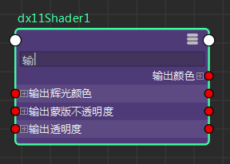

Hypershade 中新创建的节点在自定义模式（节点编辑器中的热键 4 模式）下显示，且仅显示其最常用的属性。
创建节点连接时，如果默认情况下未显示需要连接到或从其连接的属性，则可以单击 3 以切换到完全模式，以便显示更长的属性列表。您甚至可以右键单击节点，然后选择“显示所有属性”(Show All Attributes)以便显示其所有属性。
如果在完全模式下或在“显示所有属性”(Show All Attributes)模式下可用属性的列表太长，则可以使用节点样例下的过滤器字段过滤出属性。例如，如果要分离出与颜色相关的属性，请键入“col”，系统将仅显示包含字母“col”的属性。
可以通过输入属性长名称或其 UI 名称进行过滤，例如：“环境色”(Ambient Color)或 ambientColor。

若要在显示和隐藏过滤器字段之间切换，请单击工具栏中的  。在自定义模式（模式 4）下，默认情况下禁用过滤器字段。单击 可显示它。
。在自定义模式（模式 4）下，默认情况下禁用过滤器字段。单击 可显示它。
注： 由于过滤，系统将绘制与隐藏属性的连接，而不绘制与主端口的连接。